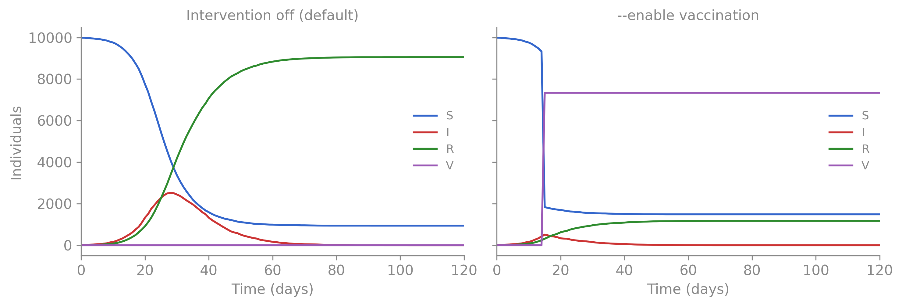
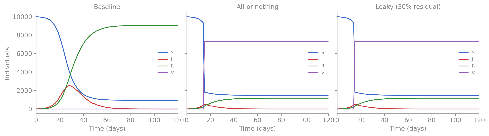
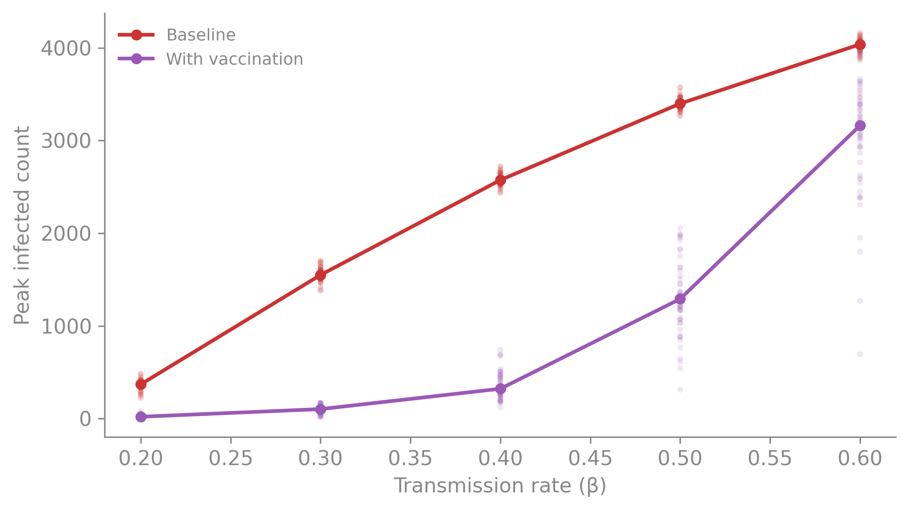

The previous chapter built up three layers of uncertainty — parameter, process, and observation — and showed how to interrogate each through simulation. But understanding the baseline epidemic is not the end goal. The questions that matter for policy are counterfactual: what would change if we intervened? And the answers must be robust: do they hold across plausible parameter values?
This chapter introduces camdl’s tools for asking and answering those questions systematically: interventions that modify the model mid-simulation, scenarios that package counterfactual comparisons, parameter sweeps that test robustness, and a batch system that manages hundreds of runs reproducibly.
Interventions
camdl’s interventions block declares actions that change the population structure at specific times. To model a vaccination campaign, we first add a Vaccinated compartment and then declare the intervention:
compartments { S, I, R, V }interventions {vaccination : transfer(fraction = vacc_eff, from = S, to = V) at [15]}
This reads: “on day 15, move a fraction vacc_eff of the susceptible population into the vaccinated compartment.” The transfer action takes individuals from one compartment and puts them in another — here, vaccinating 80% of remaining susceptibles in a single pulse.
Interventions are off by default. The model file declares what’s possible, not what happens in every run. To activate the vaccination, pass --enable:
warning: 1 transition never fired during simulation:
infection_v (propensity always 0.0)
# camdl 0.1.0+6e9d642 (2026-04-17)
t S I R V flow_infection flow_infection_v flow_recovery
0 9990 10 0 0 0 0 0
1 9986 11 3 0 4 0 3
2 9972 24 4 0 14 0 1
3 9960 31 9 0 12 0 5
Plotting code
no_vacc = run_sim(params=PARAMS, seed=42)with_vacc = run_sim(params=PARAMS, seed=42, extra_args=["--enable", "vaccination"])fig, (ax1, ax2) = plt.subplots(1, 2, figsize=(10, 3.5), sharey=True)for ax, df, title in [(ax1, no_vacc, "Intervention off (default)"), (ax2, with_vacc, "--enable vaccination")]: colors = {"S": "#3366cc", "I": "#cc3333", "R": "#2e8b2e", "V": "#9b59b6"}for col, color in colors.items():if col in df.columns: ax.plot(df["t"], df[col], color=color, label=col, linewidth=1.5) ax.set_xlabel("Time (days)") ax.set_title(title, fontsize=11, color=GREY) ax.legend(frameon=False, fontsize=9) ax.set_xlim(0, df["t"].max()) ax.spines[["top", "right"]].set_visible(False)ax1.set_ylabel("Individuals")plt.tight_layout()plt.show()

Figure 4.1: Effect of --enable vaccination. Left: baseline run with the intervention declared but inactive — the epidemic runs unchecked. Right: enabling the vaccination intervention moves 80% of susceptibles to V on day 15, sharply reducing transmission.
camdl supports several scheduling patterns:
interventions {# Single pulsesia_round_1 : transfer(fraction = 0.8, from = S, to = V) at [180]# Multiple pulsessia_rounds : transfer(fraction = 0.8, from = S, to = V) at [180, 545, 910]# Recurring scheduleroutine_vacc : transfer(fraction = vacc_rate, from = S, to = V) {every = 30'daysfrom = 0'days until = 2'years }}
NoteInterventions vs events — things that might happen vs things that did
Interventions are off by default because they represent hypothetical policy levers — “what if we vaccinated?” But some scheduled actions aren’t hypothetical. If you’re fitting a model to data from a region that had three historical vaccination campaigns, those campaigns happened — they shaped the data you’re fitting to, and omitting them is wrong.
camdl has a separate events {} block for this. Events use the same syntax as interventions but are always active — they fire in every simulation and during inference without any scenario or --enable flag:
tables {sia_dates : round = read("data/campaign_dates.tsv")}events {historical_sia[r in round] :transfer(fraction = sia_coverage, from = S, to = V)at [sia_dates[r]]}
The schedule comes from a data file — one row per campaign with its date. No hardcoded times, no scenario boilerplate. When you run camdl fit run fit.toml, the events fire automatically at the right times.
The decision rule is simple:
“Did it happen?” → events {}. Always on, zero config in fit.toml.
“What if it happened?” → interventions {}. Off by default, enable via scenario.
If you later want a counterfactual — “what if the third campaign hadn’t happened?” — you can disable individual events with --disable:
We’ll see events {} used for annual cohort entry in the He et al. measles vignette, where each year’s birth cohort enters the susceptible class at school start — a structural demographic process, not a policy choice.
Scenarios — declaring the comparison
A scenario packages a set of parameter values and intervention switches into a named configuration. This is where the counterfactual becomes explicit.
The --enable flag we used above is fine for quick one-off runs, but for systematic comparisons we want the configurations named and version-controlled. The SIRV model declares three scenarios:
The extends = baseline keyword says “inherit everything from baseline, then apply my overrides.” The with_vaccination scenario only adds enable = [vaccination] — same parameters, same initial conditions, so the comparison isolates the causal effect.
The with_leaky_vaccination scenario goes further: it inherits from baseline, enables the same intervention, and overrides one parameter. With leaky_susc = 0.0 (the default), vaccinated individuals in V are completely protected — the V --> I transition has rate zero. With leaky_susc = 0.3, every vaccinee retains 30% residual susceptibility. This is the distinction between an all-or-nothing vaccine (a fraction are fully protected, the rest get nothing) and a leaky vaccine (everyone gets partial protection). Same coverage, same VE on average, very different epidemic dynamics — a structural question answered by a single parameter.
Our usage of baseline as preset parameters might seem to contract camdls “no default parameter values” rule introduced in Chapter 2. However, the distinction is deliberate: the parameters block defines the model’s degrees of freedom — the knobs that may be the focus of estimation or inference from observed data. When you run a simulation without specifying all paramters or a particular scenario like baseline, camdl errors out and asks you to supply parameters explicitly.
Scenarios are a separate mechanism, walled off from inference. They exist so researchers can package named configurations for reproducible simulation, without those presets leaking into the fitting pipeline as implicit defaults. This separation is the same principle as the “no default parameters” rule — every assumption must be visible and explicit.
Mechanically: --scenario baseline supplies all parameter values from the scenario’s set block. If you also pass --params, the scenario values take precedence — the scenario is the final word.
warning: 1 transition never fired during simulation:
infection_v (propensity always 0.0)
# camdl 0.1.0+6e9d642 (2026-04-17)
t S I R V flow_infection flow_infection_v flow_recovery
0 9990 10 0 0 0 0 0
1 9986 11 3 0 4 0 3
2 9972 24 4 0 14 0 1
3 9960 31 9 0 12 0 5
...
Plotting code
fig, (ax1, ax2, ax3) = plt.subplots(1, 3, figsize=(12, 3.5), sharey=True)for ax, df, title in [(ax1, baseline, "Baseline"), (ax2, vaccinated, "All-or-nothing"), (ax3, leaky, "Leaky (30% residual)")]: colors = {"S": "#3366cc", "I": "#cc3333", "R": "#2e8b2e", "V": "#9b59b6"}for col, color in colors.items():if col in df.columns: ax.plot(df["t"], df[col], color=color, label=col, linewidth=1.5) ax.set_xlabel("Time (days)") ax.set_title(title, fontsize=11, color=GREY) ax.legend(frameon=False, fontsize=8) ax.set_xlim(0, df["t"].max()) ax.spines[["top", "right"]].set_visible(False)ax1.set_ylabel("Individuals")plt.tight_layout()plt.show()

Figure 4.2: Three scenarios from a single model file. Left: no intervention. Center: all-or-nothing vaccination moves 80% of S to V on day 15 — those in V are fully protected. Right: leaky vaccination moves the same fraction to V, but vaccinees retain 30% susceptibility (leaky_susc = 0.3). The leaky vaccine produces a larger, delayed epidemic because every vaccinee can still be infected.
But a single trajectory per scenario is exactly the mistake we warned about. To compare scenarios honestly, we need the distribution of outcomes under each:
Figure 4.3: Uncertainty ribbons for the infection curve under three scenarios (200 replicates each). All-or-nothing vaccination sharply reduces and compresses the peak. Leaky vaccination delays and reduces the peak but produces a broader, more uncertain epidemic — because every vaccinee can still be infected, the stochastic trajectories spread out more.
Figure 4.4: Distribution of peak infection counts across 200 replicates. All-or-nothing vaccination shifts the peak far left and compresses it. Leaky vaccination reduces the median peak but the distribution remains wide — the mechanism of protection matters, not just the coverage.
The ribbons and histograms tell the story that single trajectories can’t. The all-or-nothing vaccine doesn’t just reduce the peak — it narrows the range of possible outcomes. The leaky vaccine reduces the median peak but the distribution stays wide: because every vaccinee retains some susceptibility, stochastic variation in when those breakthrough infections happen produces a broader range of epidemic trajectories. The mechanism of protection matters, not just the coverage — and that’s a structural question about the model, not a parameter you can sweep over.
Sensitivity — how robust are the conclusions?
The results above assumed \(\beta = 0.4\). But what if transmission is higher or lower? Does vaccination still help at \(\beta = 0.6\)? Does it matter at \(\beta = 0.2\)?
A parameter sweep runs the model across a grid of values, crossed with scenarios and replicates. This is where individual CLI calls become unwieldy — you’d need a loop over \(\beta\) values, each with --param beta=X. camdl’s batch system handles this natively with a TOML manifest:
# sweep.toml[config]model="sirv.camdl"params="params.toml"seeds={ n =50 }[[scenario]]name="baseline"[[scenario]]name="with_vaccination"enable=["vaccination"][sweep]beta={ linspace ={ min =0.2, max =0.6, n =5 } }
The batch system manages the Cartesian product: 5 sweep points × 2 scenarios × 50 seeds = 500 runs, parallelized across cores and written to content-addressed output directories.
Sweep + plotting code
# Run the sweep via batch subcommand (writes to content-addressed output)batch_dir = tempfile.mkdtemp()for f in ["sirv.camdl", "params.toml", "sweep.toml"]: shutil.copy(os.path.join(EXAMPLE_DIR, f), batch_dir)batch_result = subprocess.run( ["camdl", "simulate", "batch", "sweep.toml"], cwd=batch_dir, capture_output=True, text=True, check=True)_batch_html = _ansi_to_html(batch_result.stderr.rstrip())display(HTML(f'<details class="cli-run">'f'<summary><code>$ camdl simulate batch sweep.toml</code></summary>'f'<pre class="ansi-output"><code>{_batch_html}</code></pre>'f'</details>'))# Read manifest and all trajectorieswithopen(os.path.join(batch_dir, "output", "manifest.json")) as f: manifest = json.load(f)sweep_results = []for run in manifest["runs"]: traj_path = os.path.join(batch_dir, "output", "runs", run["run_path"], "traj.tsv") traj = pl.read_csv(traj_path, separator="\t") peak = traj["I"].max() sweep_results.append({"beta": run["sweep_point"]["beta"],"scenario": run["scenario"],"peak_I": peak, })sweep_df = pl.DataFrame(sweep_results)betas =sorted(sweep_df["beta"].unique().to_list())fig, ax = plt.subplots(figsize=(7, 4))colors = {"baseline": "#cc3333", "with_vaccination": "#9b59b6"}labels = {"baseline": "Baseline", "with_vaccination": "With vaccination"}for scenario, color in colors.items(): sub = sweep_df.filter(pl.col("scenario") == scenario)for beta in betas: pts = sub.filter(pl.col("beta") == beta)["peak_I"].to_numpy() ax.scatter([beta] *len(pts), pts, color=color, alpha=0.15, s=10, edgecolors="none") medians = ( sub.group_by("beta") .agg(pl.col("peak_I").median()) .sort("beta") ) ax.plot(medians["beta"], medians["peak_I"], color=color, linewidth=2, marker="o", markersize=5, label=labels[scenario])ax.set_xlabel("Transmission rate (β)")ax.set_ylabel("Peak infected count")ax.legend(frameon=False, fontsize=9)ax.spines[["top", "right"]].set_visible(False)plt.tight_layout()plt.show()
(a) Peak infections vs transmission rate (β) under two scenarios, 50 replicates each. Points are individual replicates; lines connect medians. Vaccination consistently reduces the peak, with the largest absolute impact at intermediate β.

(b)
Figure 4.5
The sweep reveals that vaccination consistently reduces the peak across all plausible transmission rates. The conclusion is robust — it doesn’t depend on getting \(\beta\) exactly right. If the conclusion had flipped at some plausible \(\beta\), that would mean we need better data to estimate \(\beta\) before the policy comparison is meaningful.
This is sensitivity analysis applied to simulation: not “what is the answer?” but “does the answer change when I vary my assumptions?”
Content-addressed storage — provenance by construction
The batch run above generated 500 simulations. Where did they go? camdl list browses the output store:
$ camdl list --scenario baseline | head -12
CREATED MODEL SCENARIO SEED PARAMS SIZE PATH
just now camdl_37533 baseline 33 beta=0.4 2K output/runs/93762008/baseline-d405c916/seed_33
just now camdl_37533 baseline 34 beta=0.4 2K output/runs/93762008/baseline-d405c916/seed_34
just now camdl_37533 baseline 35 beta=0.4 2K output/runs/93762008/baseline-d405c916/seed_35
just now camdl_37533 baseline 32 beta=0.4 2K output/runs/93762008/baseline-d405c916/seed_32
just now camdl_37533 baseline 50 beta=0.4 2K output/runs/93762008/baseline-d405c916/seed_50
just now camdl_37533 baseline 43 beta=0.4 2K output/runs/93762008/baseline-d405c916/seed_43
just now camdl_37533 baseline 44 beta=0.4 2K output/runs/93762008/baseline-d405c916/seed_44
just now camdl_37533 baseline 26 beta=0.4 2K output/runs/93762008/baseline-d405c916/seed_26
just now camdl_37533 baseline 28 beta=0.4 2K output/runs/93762008/baseline-d405c916/seed_28
just now camdl_37533 baseline 45 beta=0.4 2K output/runs/93762008/baseline-d405c916/seed_45
just now camdl_37533 baseline 42 beta=0.4 2K output/runs/93762008/baseline-d405c916/seed_42
Each row is one run. The PARAMS column shows the sweep point (beta=0.2, beta=0.3, …) — every run knows what produced it. The PATH column reveals the layout: runs live under content-addressed hashes derived from their exact inputs (model source, parameter values, backend configuration). This is the same principle behind Git’s object store and Nix’s /nix/store. The hash is the identity.
camdl show displays the full provenance for a single run:
$ camdl show 93762008…
path
output/runs/93762008/baseline-90a5cb6f/seed_1
model
/var/folders/mp/j_ybkq8j72ndvhfm_1msdj1c0000gn/T/camdl_37533.ir.json
scenario
baseline
seed
1
backend
gillespie (dt = 1)
hashes
sim 93762008101db4c4a847f9200cbaad8edc5e610135c626c356cd94f44dcb86eb
scen 90a5cb6fd89d269e2f753c9fcfb13a27153ec17b8e00e23b9a05b6a55e781e98
model 630078cb3256e3038cbc5b9f43cb05cc375a900b672d4ab7d78770c3bd01a11b
created
2026-04-17T19:11:34Z (just now)
version
0.1.0+6e9d642
argv
camdl-sim simulate batch sweep.toml
trajectory
2104 bytes
And camdl cat emits the cached trajectory — useful for piping into analysis tools without hunting for file paths:
$ camdl cat 93762008… | head -6
t S I R V
0 9990 10 0 0
1 9989 10 1 0
2 9988 10 2 0
3 9987 10 3 0
4 9983 13 4 0
The hash-based layout has three important properties:
Adding seeds reuses all existing runs. The sim_hash and scen_hash are unchanged — only new seed directories are created.
Changing one scenario only invalidates that scenario’s runs. Everything else is cached.
Renaming a scenario without changing its content reuses the cached runs, because the hash depends on the configuration, not the name.
Every output is traceable to its exact inputs. When a collaborator asks “which parameters produced Figure 3?” the answer is in camdl show. When a reviewer asks “can you rerun with updated data?” you change the data, and the hash changes — old results are preserved, new results land in a new directory. No results_v3_final_FINAL2/.
What if? — modern interventions for a 1978 epidemic
The scenarios above used a toy SIRV to introduce the syntax. Now let’s apply the same machinery to the boarding school outbreak with realistically parameterized interventions. The premise: what if we could apply modern public health tools to the 1978 epidemic?
In January 1978, the available interventions were limited. Amantadine existed but was not routinely deployed in UK schools. Influenza vaccines existed but were not matched to the A/USSR/77 H1N1 strain that had re-emerged after a 20-year absence. The realistic response was non-pharmaceutical: isolating symptomatic boys in the infirmary and restricting dormitory mixing.
We’ll model two interventions — one reactive, one proactive — and then combine them:
Reactive isolation: starting on day 4 (when the school recognizes the outbreak), 50% of currently infectious boys are moved daily to an isolation ward (Q compartment) where they recover but no longer transmit. This reflects realistic detection delays and imperfect compliance (Wu et al., 2006).
Hypothetical vaccination: a pre-epidemic pulse that moves a fraction of susceptibles to a vaccinated compartment V. We use a vaccine effectiveness of 70% (Jefferson et al., 2005) at two coverage levels (40% and 80%), giving effective immune fractions of 28% and 56%.
Combined: 60% coverage vaccination (42% effectively immune) plus reactive isolation.
compartments { S, I, R, Q, V }interventions {vaccination : transfer(fraction = vacc_frac, from = S, to = V) at [1]isolation : transfer(fraction = isol_frac, from = I, to = Q) {every = 1'daysfrom = 4'days until = 14'days }}
The Q compartment removes individuals from the force of infection (\(\beta S I / N\) depends on \(I\), not \(I + Q\)). Isolated boys still recover at rate \(\gamma\), but they can’t infect anyone.
Figure 4.6: Uncertainty ribbons for four intervention scenarios (200 replicates each) vs baseline. Isolation only (day 4 start, 50% daily isolation rate) blunts the peak but can’t prevent the epidemic — too much transmission happens before day 4. Low vaccination (28% effectively immune) slows the epidemic but doesn’t prevent it. High vaccination (56% effectively immune) dramatically reduces the epidemic. Combined (42% vaccinated + isolation) nearly eliminates it. Dashed lines mark intervention timing.
Figure 4.7: Peak infection distributions across scenarios. Baseline peaks cluster around 280–340. Isolation alone reduces the median peak by roughly 40%. High-coverage vaccination compresses the peak to below 50. The combined strategy nearly eliminates the epidemic — most replicates never exceed 30 infected.
Several lessons emerge from this comparison:
Timing is everything for reactive interventions. Isolation starting on day 4 still allows three days of exponential growth. By then, dozens of boys are already infectious and have seeded transmission chains that isolation can’t fully contain. This is a fundamental constraint: with influenza’s 1–2 day incubation period, a substantial fraction of transmission occurs before symptoms appear (Carrat et al., 2008), setting a ceiling on how much symptom-based isolation can achieve.
The herd immunity threshold is demanding. With \(R_0 \approx 3.8\) for this parameterization (at the high end of estimates for this outbreak; Murray 2002 and Vynnycky & White 2010 give \(R_0 \approx 3.0\)–\(3.5\)), the herd immunity threshold is \(1 - 1/R_0 = 0.74\). To reach this with a 70%-effective vaccine, you’d need to vaccinate \(0.74 / 0.70 = 106\%\) of the population — impossible. Even 80% coverage (56% effectively immune) doesn’t cross the threshold, though it substantially blunts the epidemic.
Layered interventions compound. Neither vaccination at 60% coverage nor isolation alone brings \(R_0\) below 1. But the combination reduces the effective reproduction number from 3.8 to roughly 1.3–1.5. The epidemic is nearly eliminated — not because either intervention is sufficient on its own, but because they multiply. This is the Swiss-cheese model of public health: each layer is imperfect, but stacking them drives transmission toward extinction.
NoteA note on the 1978 reality
The observed data already reflects partial isolation — sick boys were confined to bed. The “baseline” scenario uses parameters fitted to this partially-mitigated epidemic. A truly unmitigated outbreak would have an even higher effective \(\beta\). The counterfactual comparisons above ask “what if we had done more” — the more interesting and policy-relevant question.
--dry-run — verify before committing
Before launching a large batch, --dry-run shows the resolved parameters and their provenance without executing anything:
Every parameter shows its final value and where it came from — model defaults, params file, scenario override, or CLI --param. For batch runs with sweeps and multiple scenarios, --dry-run shows the total run count and the full parameter grid.
What’s next
The SIR here is deliberately simple — one pathogen, one population, fourteen days. The same tools scale to substantially more complex models. camdl supports indexed parameters, spatial stratification with coupling matrices, time-varying covariates via forcing functions, and observation models with multiple data streams. In the He et al. measles vignette, we apply the same workflow — --draws prior, --replicates, --scenario, batch — to a model with seasonal forcing, environmental overdispersion, and 60 years of weekly case data. The commands are the same; the model is not.
Fitting to Data — recover parameters from observed data using IF2 and PGAS+NUTS.